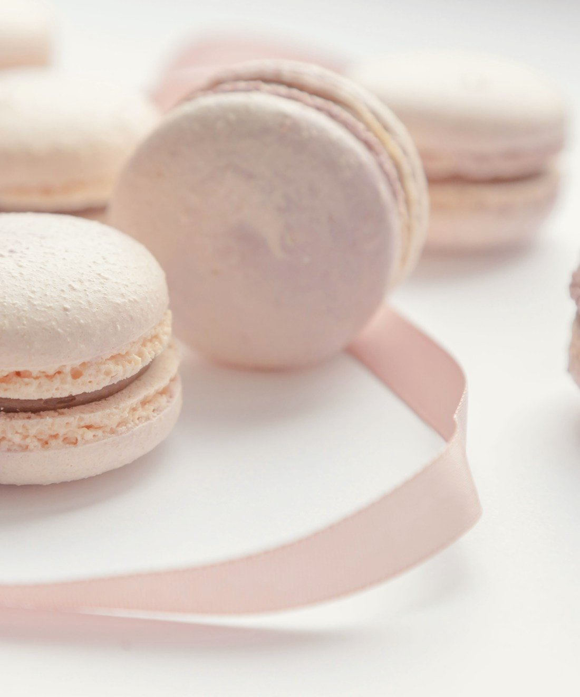
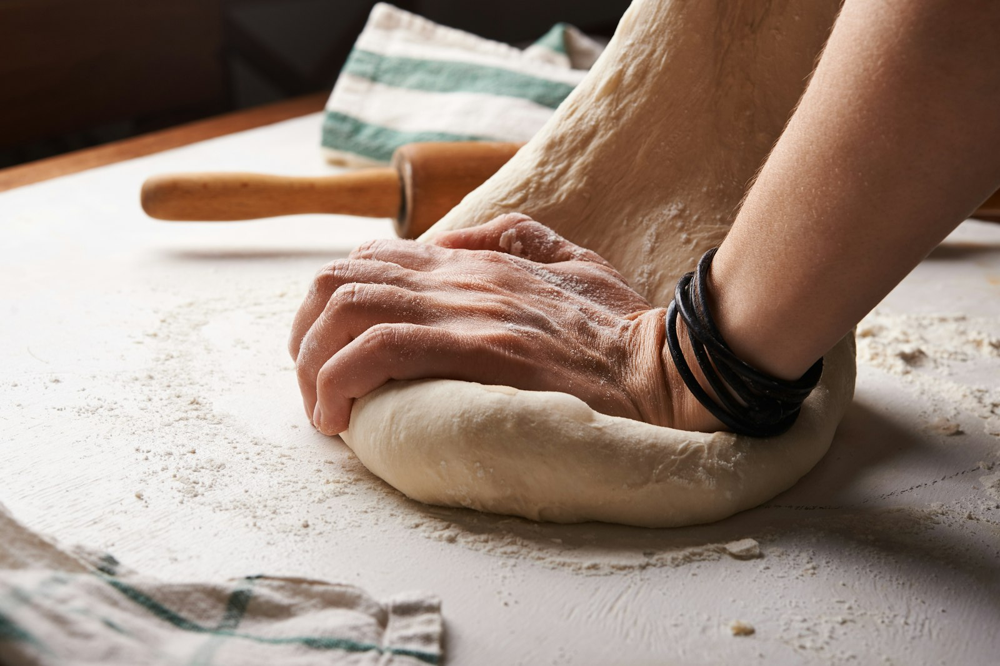
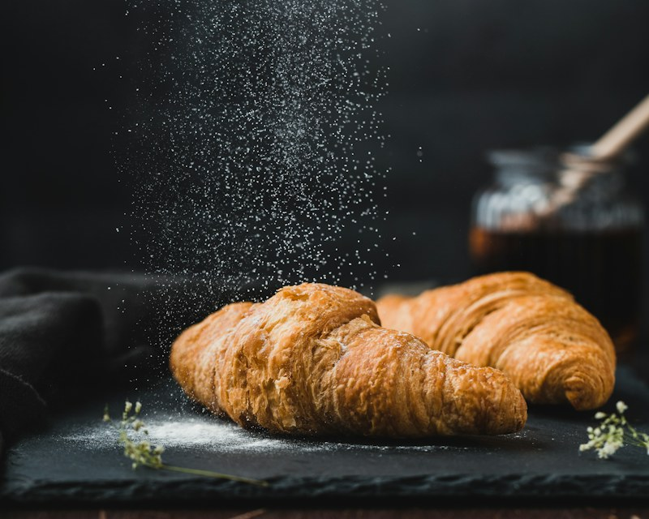
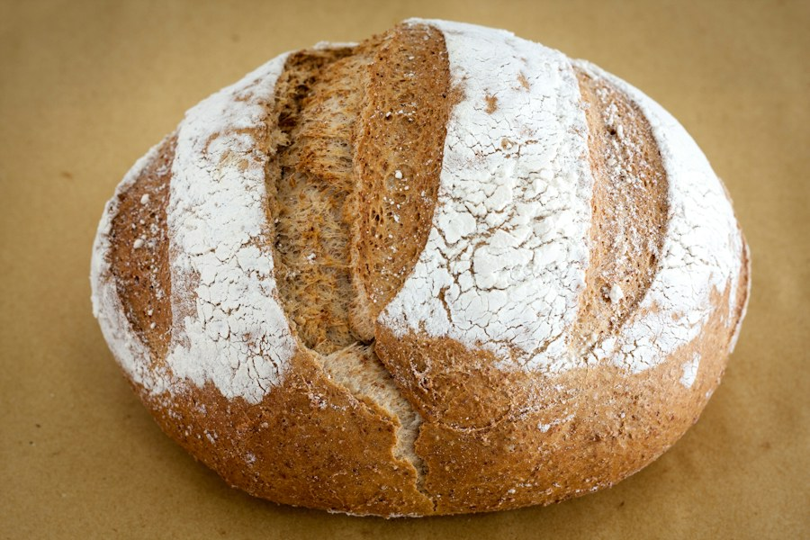
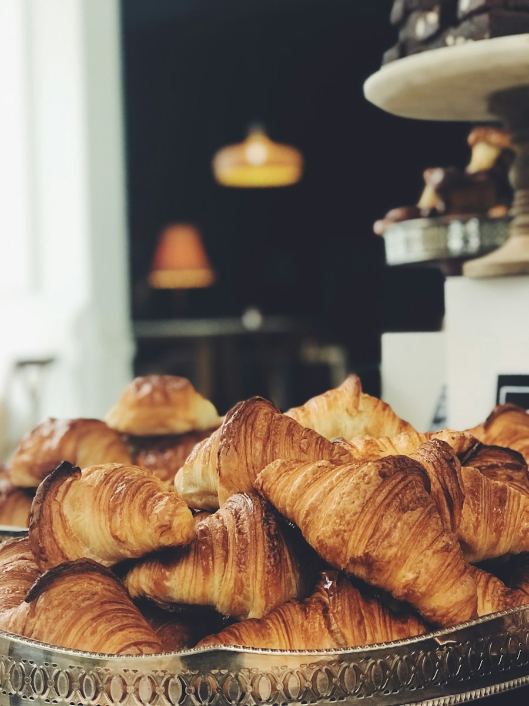
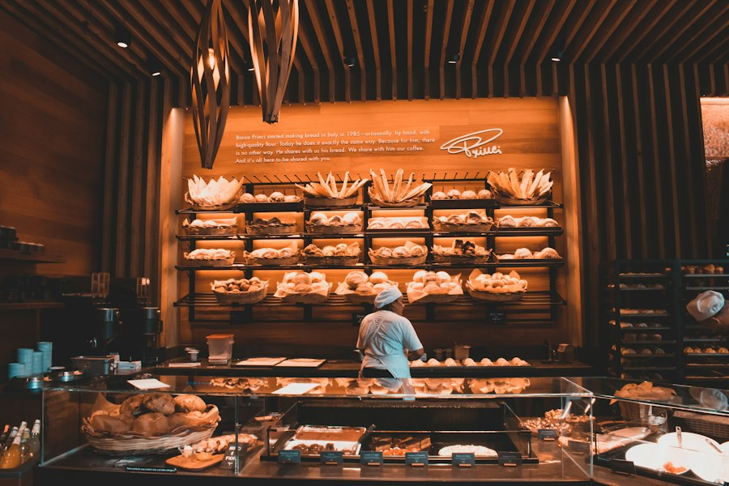
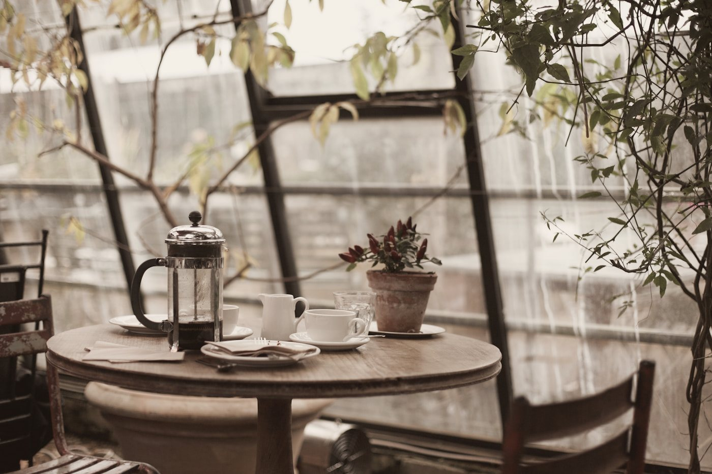
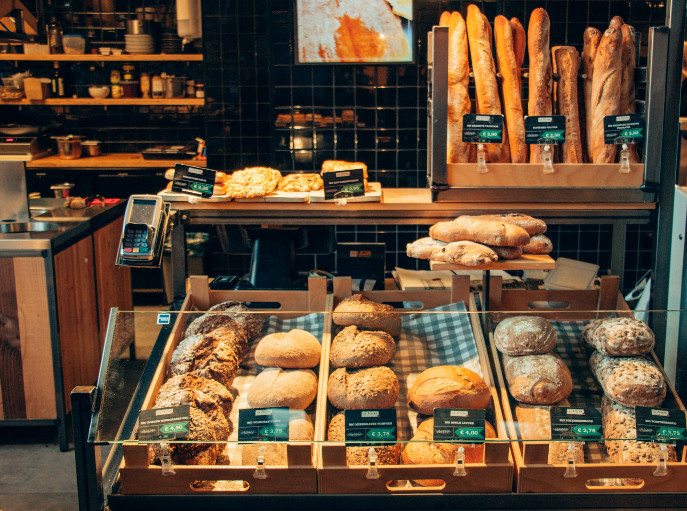

Классический розовый макарон
Миндальная скорлупка, ганаш на белом шоколаде и малиновое конфи.
220 ₽
Покровка и Никитская · сегодня с 7:30
Кофейня и пекарня в старом доме на Покровке
В пять утра мы зажигаем печи. К открытию на витрине хрустящие круассаны, хлеб на живой закваске и макаронс, которые ещё помнят тепло рук.
Framboise — малина
и белый шоколад
Как он устроен
01
Миндальная мука, сахарная пудра и взбитый белок. Тесто отстаивается полчаса, пока на поверхности не появится матовая корочка — только тогда крышечка выйдет гладкой.
02
Белый шоколад и сливки, а в самой середине — капля малинового конфи. Ганаш сутки стабилизируется в холоде, чтобы не вытекал и оставался кремовым.
03
Та самая пористая кромка внизу — признак правильной выпечки. Появляется, если печь ровно 14 минут при 150 °C и ни разу не открыть дверцу.
Конструктор
Выберите размер и вкусы — мы соберём коробку к вашему приходу. Заказ уходит нам в Telegram одним сообщением.
нажмите на макарон в коробке, чтобы убрать его
Вкусы нажмите, чтобы положить в коробку
Осталось выбрать 61 250 ₽


О нас
Наша закваска живёт с 2016 года. Тесто для круассанов отдыхает трое суток, прежде чем попасть в печь. Мы не торопимся там, где спешка стоит вкуса, и не используем смеси, улучшители и заморозку.
Муку привозят с небольшой мельницы под Тверью, масло — из Нормандии, ягоды — с фермы, где мы знаем хозяев по именам.





Адреса
ул. Покровка, 17, стр. 1
м. Чистые пруды
ул. Большая Никитская, 24/1
м. Арбатская
здесь тише и есть широкий подоконник

Покровка, 17 — пять минут пешком от Чистых прудов.
Построить маршрут →